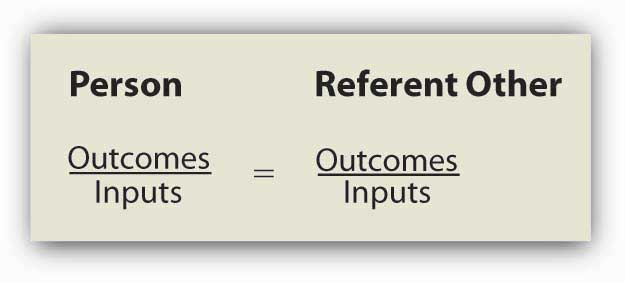
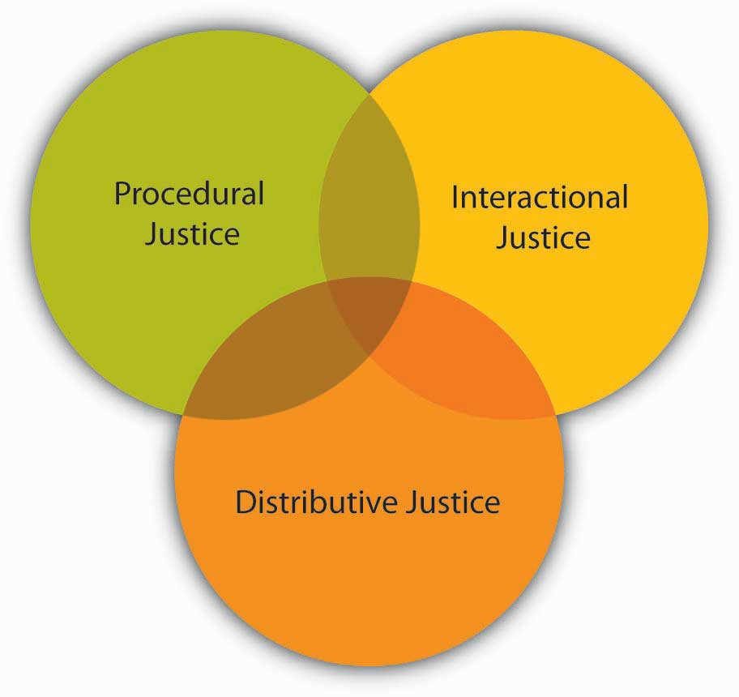
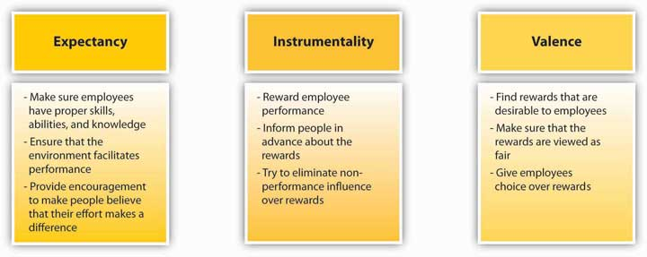

A separate stream of research views motivation as something more than action aimed at satisfying a need. Instead, process-based theories view motivation as a rational process. Individuals analyze their environment, develop thoughts and feelings, and react in certain ways. Process theories attempt to explain the thought processes of individuals who demonstrate motivated behavior. Under this category, we will review equity theory, expectancy theory, and reinforcement theory.
Imagine that you are paid $10 an hour working as an office assistant. You have held this job for 6 months. You are very good at what you do, you come up with creative ways to make things easier around you, and you are a good colleague who is willing to help others. You stay late when necessary and are flexible if requested to change hours. Now imagine that you found out they are hiring another employee who is going to work with you, who will hold the same job title, and who will perform the same type of tasks. This particular person has more advanced computer skills, but it is unclear whether these will be used on the job. The starting pay for this person will be $14 an hour. How would you feel? Would you be as motivated as before, going above and beyond your duties? How would you describe what you would be feeling?
Figure 5.7
Equity is determined by comparing one’s input-outcome ratio with the input-outcome ratio of a referent. When the two ratios are equal, equity exists.
Source: Based on Adams, J. S. (1965). Inequity in social exchange. In L. Berkowitz (Ed.), Advances in experimental social psychology: Vol. 2 (pp. 267–299). New York: Academic Press.
If your reaction to this scenario is along the lines of “this would be unfair,” your behavior may be explained using equity theory.Adams, J. S. (1965). Inequity in social exchange. In L. Berkowitz (Ed.), Advances in experimental social psychology (Vol. 2, pp. 267–299). New York: Academic Press. According to this theory, individuals are motivated by a sense of fairness in their interactions. Moreover, our sense of fairness is a result of the social comparisons we make. Specifically, we compare our inputs and outcomes with other people’s inputs and outcomes. We perceive fairness if we believe that the input-to-outcome ratio we are bringing into the situation is similar to the input-to-outcome ratio of a comparison person, or a referentA person we compare ourselves to in equity theory.. Perceptions of inequity create tension within us and drive us to action that will reduce perceived inequity.
Inputs are the contributions people feel they are making to the environment. In the previous example, the person’s hard work; loyalty to the organization; amount of time with the organization; and level of education, training, and skills may have been relevant inputs. Outcomes are the perceived rewards someone can receive from the situation. For the hourly wage employee in our example, the $10 an hour pay rate was a core outcome. There may also be other, more peripheral outcomes, such as acknowledgment or preferential treatment from a manager. In the prior example, however, the person may reason as follows: I have been working here for 6 months. I am loyal, and I perform well (inputs). I am paid $10 an hour for this (outcomes). The new person does not have any experience here (referent’s inputs) but will be paid $14 an hour. This situation is unfair.
We should emphasize that equity perceptions develop as a result of a subjective process. Different people may look at the same situation and perceive different levels of equity. For example, another person may look at the same scenario and decide that the situation is fair because the newcomer has computer skills and the company is paying extra for those skills.
The referent other may be a specific person as well as a category of people. Referents should be comparable to us—otherwise the comparison is not meaningful. It would be pointless for a student worker to compare himself to the CEO of the company, given the differences in the nature of inputs and outcomes. Instead, individuals may compare themselves to someone performing similar tasks within the same organization or, in the case of a CEO, a different organization.
The theory outlines several potential reactions to perceived inequity. Oftentimes, the situation may be dealt with perceptually by altering our perceptions of our own or the referent’s inputs and outcomes. For example, we may justify the situation by downplaying our own inputs (I don’t really work very hard on this job), valuing our outcomes more highly (I am gaining valuable work experience, so the situation is not that bad), distorting the other person’s inputs (the new hire really is more competent than I am and deserves to be paid more), or distorting the other person’s outcomes (she gets $14 an hour but will have to work with a lousy manager, so the situation is not unfair). Another option would be to have the referent increase inputs. If the other person brings more to the situation, getting more out of the situation would be fair. If that person can be made to work harder or work on more complicated tasks, equity would be achieved. The person experiencing a perceived inequity may also reduce inputs or attempt to increase outcomes. If the lower paid person puts forth less effort, the perceived inequity would be reduced. Research shows that people who perceive inequity reduce their work performance or reduce the quality of their inputs.Carrell, M. R., & Dittrich, J. E. (1978). Equity theory: The recent literature, methodological considerations, and new directions. Academy of Management Review, 3, 202–210; Goodman, P. S., & Friedman, A. (1971). An examination of Adams’ theory of inequity. Administrative Science Quarterly, 16, 271–288. Increasing one’s outcomes can be achieved through legitimate means such as negotiating a pay raise. At the same time, research shows that those feeling inequity sometimes resort to stealing to balance the scales.Greenberg, J. (1993). Stealing in the name of justice: Informational and interpersonal moderators of theft reactions to underpayment inequity. Organizational Behavior and Human Decision Processes, 54, 81–103. Other options include changing the comparison person (e.g., others doing similar work in different organizations are paid only minimum wage) and leaving the situation by quitting.Schmidt, D. R., & Marwell, G. (1972). Withdrawal and reward reallocation as responses to inequity. Journal of Experimental Social Psychology, 8, 207–211. Sometimes it may be necessary to consider taking legal action as a potential outcome of perceived inequity. For example, if an employee finds out the main reason behind a pay gap is gender related, the person may react to the situation by taking legal action because sex discrimination in pay is illegal in the United States.
Table 5.1 Potential Responses to Inequity
| Reactions to inequity | Example |
|---|---|
| Distort perceptions | Changing one’s thinking to believe that the referent actually is more skilled than previously thought |
| Increase referent’s inputs | Encouraging the referent to work harder |
| Reduce own input | Deliberately putting forth less effort at work. Reducing the quality of one’s work |
| Increase own outcomes | Negotiating a raise for oneself or using unethical ways of increasing rewards such as stealing from the company |
| Change referent | Comparing oneself to someone who is worse off |
| Leave the situation | Quitting one’s job |
| Seek legal action | Suing the company or filing a complaint if the unfairness in question is under legal protection |
Source: Based on research findings reported in Carrell, M. R., & Dittrich, J. E. (1978). Equity theory: The recent literature, methodological considerations, and new directions. Academy of Management Review, 3, 202–210; Goodman, P. S., & Friedman, A. (1971). An examination of Adams’s theory of inequity. Administrative Science Quarterly, 16, 271–288; Greenberg, J. (1993). Stealing in the name of justice: Informational and interpersonal moderators of theft reactions to underpayment inequity. Organizational Behavior and Human Decision Processes, 54, 81–103; Schmidt, D. R., & Marwell, G. (1972). Withdrawal and reward reallocation as responses to inequity. Journal of Experimental Social Psychology, 8, 207–211.
What would you do if you felt you were over-rewarded? In other words, how would you feel if you were the new employee in our student-worker scenario? Originally, equity theory proposed that over-rewarded individuals would experience guilt and would increase their effort to restore perceptions of equity. However, research does not provide support for this argument. Instead, it seems that individuals experience less distress as a result of being over-rewarded.Austin, W., & Walster, E. (1974). Reactions to confirmations and disconfirmations of expectancies of equity and inequity. Journal of Personality and Social Psychology, 30, 208–216. It is not hard to imagine that individuals find perceptual ways to deal with a situation like this, such as believing they have more skills and bring more to the situation compared to the referent person. Therefore, research does not support equity theory’s predictions with respect to people who are overpaid.Evan, W. M., & Simmons, R. G. (1969). Organizational effects of inequitable rewards: Two experiments in status inconsistency. IEEE Engineering Management Review, 1, 95–108.
So far, we have assumed that once people feel a situation is inequitable, they will be motivated to react. However, does inequity disturb everyone equally? Researchers have identified a personality trait that explains different reactions to inequity and named this trait as equity sensitivityA personality trait that explains different reactions to inequity..Huseman, R. C., Hatfield, J. D., & Miles, E. W. (1987). A new perspective on equity theory: The equity sensitivity construct. Academy of Management Review, 12, 222–234. Equity-sensitive individuals expect to maintain equitable relationships, and they experience distress when they feel they are over-rewarded or under-rewarded. At the same time, there are some individuals who are benevolentsIndividuals who give without waiting to receive much in return., those who give without waiting to receive much in return, and entitledsIndividuals who expect to receive a lot without giving much in return., who expect to receive substantial compensation for relatively little input. Therefore, the theory is more useful in explaining the behavior of equity-sensitive individuals, and organizations will need to pay particular attention to how these individuals view their relationships.
Equity theory looks at perceived fairness as a motivator. However, the way equity theory defines fairness is limited to fairness of rewards. Starting in the 1970s, research on workplace fairness began taking a broader view of justice. Equity theory deals with outcome fairness, and therefore it is considered to be a distributive justice theory. Distributive justiceThe degree to which the outcomes received from the organization are fair. refers to the degree to which the outcomes received from the organization are perceived to be fair. Two other types of fairness have been identified: procedural justice and interactional justice.
Figure 5.8 Dimensions of Organizational Justice
Let’s assume that you just found out you are getting a promotion. Clearly, this is an exciting outcome and comes with a pay raise, increased responsibilities, and prestige. If you feel you deserve to be promoted, you would perceive high distributive justice (your getting the promotion is fair). However, you later found out upper management picked your name out of a hat! What would you feel? You might still like the outcome but feel that the decision-making process was unfair. If so, you are describing feelings of procedural justice. Procedural justiceThe degree to which fair decision-making procedures are used to arrive at a decision. refers to the degree to which fair decision-making procedures are used to arrive at a decision. People do not care only about reward fairness. They also expect decision-making processes to be fair. In fact, research shows that employees care about the procedural justice of many organizational decisions, including layoffs, employee selection, surveillance of employees, performance appraisals, and pay decisions.Alge, B. J. (2001). Effects of computer surveillance on perceptions of privacy and procedural justice. Journal of Applied Psychology, 86, 797–804; Bauer, T. N., Maertz, C. P., Jr., Dolen, M. R., & Campion, M. A. (1998). Longitudinal assessment of applicant reactions to employment testing and test outcome feedback. Journal of Applied Psychology, 83, 892–903; Kidwell, R. E. (1995). Pink slips without tears. Academy of Management Executive, 9, 69–70. People also tend to care more about procedural justice in situations in which they do not get the outcome they feel they deserve.Brockner, J., & Wiesenfeld, B. M. (1996). An integrative framework for explaining reactions to decisions: Interactive effects of outcomes and procedures. Psychological Bulletin, 120, 189–208. If you did not get the promotion and later discovered that management chose the candidate by picking names out of a hat, how would you feel? This may be viewed as adding insult to injury. When people do not get the rewards they want, they tend to hold management responsible if procedures are not fair.Brockner, J., Fishman, A. Y., Reb, J., Goldman, B., Spiegel, S., & Garden, C. (2007). Procedural fairness, outcome favorability, and judgments of an authority’s responsibility. Journal of Applied Psychology, 92, 1657–1671.
Why do employees care about procedural justice? There are three potential reasons.Cropanzano, R., Bowen, D. E., & Gilliland, S. W. (2007). The management of organizational justice. Academy of Management Perspectives, 21, 34–48; Tyler, T. R. (1994). Psychological models of the justice motive: Antecedents of distributive and procedural justice. Journal of Personality and Social Psychology, 67, 850–863; Tyler, T., Degoey, P., & Smith, H. (1996). Understanding why the justice of group procedures matters: A test of the psychological dynamics of the group-value model. Journal of Personality and Social Psychology, 70, 913–930. First, people tend to believe that fairness is an end in itself and it is the right thing to do. Second, fair processes guarantee future rewards. If your name was picked out of a hat, you have no control over the process, and there is no guarantee that you will get future promotions. If the procedures are fair, you are more likely to believe that things will work out in the future. Third, fairness communicates that the organization values its employees and cares about their well-being.
Research has identified many ways of achieving procedural justice. For example, giving employees advance notice before laying them off, firing them, or disciplining them is perceived as fair.Kidwell, R. E. (1995). Pink slips without tears. Academy of Management Executive, 9, 69–70. Advance notice helps employees get ready for the changes facing them or gives them an opportunity to change their behavior before it is too late. Allowing employees voice in decision making is also important.Alge, B. J. (2001). Effects of computer surveillance on perceptions of privacy and procedural justice. Journal of Applied Psychology, 86, 797–804; Kernan, M. C., & Hanges, P. J. (2002). Survivor reactions to reorganization: Antecedents and consequences of procedural, interpersonal, and informational justice. Journal of Applied Psychology, 87, 916–928; Lind, E. A., Kanfer, R., & Earley, C. P. (1990). Voice, control, and procedural justice: Instrumental and noninstrumental concerns in fairness judgments. Journal of Personality and Social Psychology, 59, 952–959. When designing a performance-appraisal system or implementing a reorganization, it may be a good idea to ask people for their input because it increases perceptions of fairness. Even when it is not possible to have employees participate, providing explanations to employees is helpful in fostering procedural justice.Schaubroeck, J., May, D. R., & William, B. F. (1994). Procedural justice explanations and employee reactions to economic hardship: A field experiment. Journal of Applied Psychology, 79, 455–460. Finally, people expect consistency in treatment.Bauer, T. N., Maertz, C. P., Jr., Dolen, M. R., & Campion, M. A. (1998). Longitudinal assessment of applicant reactions to employment testing and test outcome feedback. Journal of Applied Psychology, 83, 892–903. If one person is given extra time when taking a test while another is not, individuals would perceive decision making as unfair.
Now let’s imagine the moment your boss told you that you are getting a promotion. Your manager’s exact words were, “Yes, we are giving you the promotion. The job is so simple that we thought even you can handle it.” Now what is your reaction? The feeling of unfairness you may now feel is explained by interactional justice. Interactional justiceThe degree to which people are treated with respect, kindness, and dignity in interpersonal interactions. refers to the degree to which people are treated with respect, kindness, and dignity in interpersonal interactions. We expect to be treated with dignity by our peers, supervisors, and customers. When the opposite happens, we feel angry. Even when faced with negative outcomes such as a pay cut, being treated with dignity and respect serves as a buffer and alleviates our stress.Greenberg, J. (2006). Losing sleep over organizational injustice: Attenuating insomniac reactions to underpayment inequity with supervisory training in interactional justice. Journal of Applied Psychology, 91, 58–69.
Sources: Adapted from ideas in Colquitt, J. A. (2004). Does the justice of the one interact with the justice of the many? Reactions to procedural justice in teams. Journal of Applied Psychology, 89, 633–646; Cropanzano, R., Bowen, D. E., & Gilliland, S. W. (2007). The management of organizational justice. Academy of Management Perspectives, 21, 34–48.
Employers would benefit from paying attention to all three types of justice perceptions. In addition to being the right thing to do, paying attention to justice perceptions leads to outcomes companies care about. Injustice is directly harmful to employees’ psychological health and well-being and contributes to stress.Greenberg, J. (2004). Managing workplace stress by promoting organizational justice. Organizational Dynamics, 33, 352–365; Tepper, B. J. (2001). Health consequences of organizational injustice: Tests of main and interactive effects. Organizational Behavior and Human Decision Processes, 86, 197–215. High levels of justice create higher levels of employee commitment to organizations, and they are related to higher job performance, higher levels of organizational citizenship (behaviors that are not part of one’s job description but help the organization in other ways, such as speaking positively about the company and helping others), and higher levels of customer satisfaction. Conversely, low levels of justice lead to retaliation and support of unionization.Blader, S. L. (2007). What leads organizational members to collectivize? Injustice and identification as precursors of union certification. Organization Science, 18, 108–126; Cohen-Charash, Y., & Spector, P. E. (2001). The role of justice in organizations: A meta-analysis. Organizational Behavior and Human Decision Processes, 86, 278–321; Colquitt, J. A., Conlon, D. E., Wesson, M. J., Porter, C. O. L. H., & Ng, K. Y. (2001). Justice at the millennium: A meta-analytic review of 25 years of organizational justice research. Journal of Applied Psychology, 86, 425–445; Cropanzano, R., Bowen, D. E., & Gilliland, S. W. (2007). The management of organizational justice. Academy of Management Perspectives, 21, 34–48; Masterson, S. S. (2001). A trickle-down model of organizational justice: Relating employees’ and customers’ perceptions of and reactions to fairness. Journal of Applied Psychology, 86, 594–604; Masterson, S. S., Lewis, K., Goldman, B. M., & Taylor, S. M. (2000). Integrating justice and social exchange: The differing effects of fair procedures and treatment on work relationships. Academy of Management Journal, 43, 738–748; Moorman, R. H. (1991). Relationship between organizational justice and organizational citizenship behaviors: Do fairness perceptions influence employee citizenship? Journal of Applied Psychology, 76, 845–855; Skarlicki, D. P., & Folger, R. (1997). Retaliation in the workplace: The roles of distributive, procedural, and interactional justice. Journal of Applied Psychology, 82, 434–443.
According to expectancy theory, individual motivation to put forth more or less effort is determined by a rational calculation in which individuals evaluate their situation.Porter, L. W., & Lawler, E. E. (1968). Managerial attitudes and performance. Homewood, IL: Irwin; Vroom, V. H. (1964). Work and motivation. New York: Wiley. According to this theory, individuals ask themselves three questions.
Figure 5.9 Summary of Expectancy Theory

Sources: Based on Porter, L. W., & Lawler, E. E. (1968). Managerial attitudes and performance. Homewood, IL: Irwin; Vroom, V. H. (1964). Work and motivation. New York: Wiley.
The first question is whether the person believes that high levels of effort will lead to outcomes of interest, such as performance or success. This perception is labeled expectancyWhether the person believes that high levels of effort will lead to outcomes of interest such as performance or success.. For example, do you believe that the effort you put forth in a class is related to performing well in that class? If you do, you are more likely to put forth effort.
The second question is the degree to which the person believes that performance is related to subsequent outcomes, such as rewards. This perception is labeled instrumentalityThe degree to which the person believes that performance is related to secondary outcomes such as rewards.. For example, do you believe that getting a good grade in the class is related to rewards such as getting a better job, or gaining approval from your instructor, or from your friends or parents? If you do, you are more likely to put forth effort.
Finally, individuals are also concerned about the value of the rewards awaiting them as a result of performance. The anticipated satisfaction that will result from an outcome is labeled valenceThe value of the rewards awaiting the person as a result of performance.. For example, do you value getting a better job, or gaining approval from your instructor, friends, or parents? If these outcomes are desirable to you, your expectancy and instrumentality is high, and you are more likely to put forth effort.
Expectancy theory is a well-accepted theory that has received a lot of research attention.Heneman, H. G., & Schwab, D. P. (1972). Evaluation of research on expectancy theory predictions of employee performance. Psychological Bulletin, 78, 1–9; Van Eerde, W., & Thierry, H. (1996). Vroom’s expectancy models and work-related criteria: A meta-analysis. Journal of Applied Psychology, 81, 575–586. It is simple and intuitive. Consider the following example. Let’s assume that you are working in the concession stand of a movie theater. You have been selling an average of 100 combos of popcorn and soft drinks a day. Now your manager asks you to increase this number to 300 combos a day. Would you be motivated to try to increase your numbers? Here is what you may be thinking:
If your answers to all three questions are affirmative—you feel that you can do it, you will get an outcome if you do it, and you value the reward—you are more likely to be motivated to put forth more effort toward selling more combos.
As a manager, how can you motivate employees? In fact, managers can influence all three perceptions.Cook, C. W. (1980). Guidelines for managing motivation. Business Horizons, 23, 61–69.
Employees may not believe that their effort leads to high performance for a multitude of reasons. First, they may not have the skills, knowledge, or abilities to successfully perform their jobs. The answer to this problem may be training employees or hiring people who are qualified for the jobs in question. Second, low levels of expectancy may be because employees may feel that something other than effort predicts performance, such as political behaviors on the part of employees. If employees believe that the work environment is not conducive to performing well (resources are lacking or roles are unclear), expectancy will also suffer. Therefore, clearing the path to performance and creating an environment in which employees do not feel restricted will be helpful. Finally, some employees may perceive little connection between their effort and performance level because they have an external locus of control, low self-esteem, or other personality traits that condition them to believe that their effort will not make a difference. In such cases, providing positive feedback and encouragement may help motivate employees.
Showing employees that their performance is rewarded is going to increase instrumentality perceptions. Therefore, the first step in influencing instrumentality is to connect pay and other rewards to performance using bonuses, award systems, and merit pay. However, this is not always sufficient, because people may not be aware of some of the rewards awaiting high performers. Publicizing any contests or award programs is needed to bring rewards to the awareness of employees. It is also important to highlight that performance, not something else, is being rewarded. For example, if a company has an employee of the month award that is rotated among employees, employees are unlikely to believe that performance is being rewarded. This type of meritless reward system may actually hamper the motivation of the highest performing employees by eroding instrumentality.
Employees are more likely to be motivated if they find the reward to be attractive. This process involves managers finding what their employees value. Desirable rewards tend to be fair and satisfy different employees’ diverging needs. Ensuring high valence involves getting to know a company’s employees. Talking to employees and surveying them about what rewards they find valuable are some methods to gain understanding. Finally, giving employees a choice between multiple rewards may be a good idea to increase valence.
Figure 5.10 Ways in Which Managers Can Influence Expectancy, Instrumentality, and Valence
Reinforcement theory is based on the work of Ivan Pavlov on behavioral conditioning and the later work of B. F. Skinner on operant conditioning.Skinner, B. F. (1953). Science and human behavior. New York: Free Press. According to reinforcement theory, behavior is a function of its outcomes. Imagine that even though no one asked you to, you stayed late and drafted a report. When the manager found out, she was ecstatic and took you out to lunch and thanked you genuinely. The consequences following your good deed were favorable, and therefore you are more likely to demonstrate similar behaviors in the future. In other words, your taking initiative was reinforced. Instead, if your manager had said nothing about it and everyone ignored the sacrifice you made, you are less likely to demonstrate similar behaviors in the future.
Reinforcement theory is based on a simple idea that may be viewed as common sense. Beginning at infancy we learn through reinforcement. If you have observed a small child discovering the environment, you will see reinforcement theory in action. When the child discovers manipulating a faucet leads to water coming out and finds this outcome pleasant, he is more likely to repeat the behavior. If he burns his hand while playing with hot water, the child is likely to stay away from the faucet in the future.
Despite the simplicity of reinforcement, how many times have you seen positive behavior ignored, or worse, negative behavior rewarded? In many organizations, this is a familiar scenario. People go above and beyond the call of duty, yet their actions are ignored or criticized. People with disruptive habits may receive no punishments because the manager is afraid of the reaction the person will give when confronted. Problem employees may even receive rewards such as promotions so they will be transferred to a different location and become someone else’s problem. Moreover, it is common for people to be rewarded for the wrong kind of behavior. Steven Kerr has labeled this phenomenon “the folly of rewarding A while hoping for B.”Kerr, S. (1995). On the folly of rewarding A while hoping for B. Academy of Management Executive, 9, 7–14. For example, a company may make public statements about the importance of quality. Yet, if they choose to reward shipments on time regardless of the amount of defects contained in the shipments, employees are more likely to ignore quality and focus on hurrying the delivery process. Because people learn to repeat their behaviors based on the consequences following their prior activities, managers will need to systematically examine the consequences of employee behavior and make interventions when needed.
Reinforcement theory describes four interventions to modify employee behavior. Two of these are methods of increasing the frequency of desired behaviors, while the remaining two are methods of reducing the frequency of undesired behaviors.
Figure 5.11 Reinforcement Methods

Positive reinforcementMaking sure that behavior is met with positive consequences. is a method of increasing the desired behavior.Beatty, R. W., & Schneier, C. E. (1975). A case for positive reinforcement. Business Horizons, 18, 57–66. Positive reinforcement involves making sure that behavior is met with positive consequences. For example, praising an employee for treating a customer respectfully is an example of positive reinforcement. If the praise immediately follows the positive behavior, the employee will see a link between the behavior and positive consequences and will be motivated to repeat similar behaviors.
Negative reinforcementRemoval of unpleasant outcomes once desired behavior is demonstrated. is also used to increase the desired behavior. Negative reinforcement involves removal of unpleasant outcomes once desired behavior is demonstrated. Nagging an employee to complete a report is an example of negative reinforcement. The negative stimulus in the environment will remain present until positive behavior is demonstrated. The problem with negative reinforcement is that the negative stimulus may lead to unexpected behaviors and may fail to stimulate the desired behavior. For example, the person may start avoiding the manager to avoid being nagged.
ExtinctionThe removal of rewards following negative behavior. is used to decrease the frequency of negative behaviors. Extinction is the removal of rewards following negative behavior. Sometimes, negative behaviors are demonstrated because they are being inadvertently rewarded. For example, it has been shown that when people are rewarded for their unethical behaviors, they tend to demonstrate higher levels of unethical behaviors.Harvey, H. W., & Sims, H. P. (1978). Some determinants of unethical decision behavior: An experiment. Journal of Applied Psychology, 63, 451–457. Thus, when the rewards following unwanted behaviors are removed, the frequency of future negative behaviors may be reduced. For example, if a coworker is forwarding unsolicited e-mail messages containing jokes, commenting and laughing at these jokes may be encouraging the person to keep forwarding these messages. Completely ignoring such messages may reduce their frequency.
PunishmentPresenting negative consequences following unwanted behaviors. is another method of reducing the frequency of undesirable behaviors. Punishment involves presenting negative consequences following unwanted behaviors. Giving an employee a warning for consistently being late to work is an example of punishment.
In addition to types of reinforcements, researchers have focused their attention on schedules of reinforcement as well.Beatty, R. W., & Schneier, C. E. (1975). A case for positive reinforcement. Business Horizons, 18, 57–66. Reinforcement is presented on a continuous scheduleWhen reinforcers follow all instances of positive behavior. if reinforcers follow all instances of positive behavior. An example of a continuous schedule would be giving an employee a sales commission every time he makes a sale. In many instances, continuous schedules are impractical. For example, it would be difficult to praise an employee every time he shows up to work on time. Fixed-ratio schedulesRewarding behavior after a set number of occurrences. involve providing rewards every nth time the right behavior is demonstrated. An example of this would be giving the employee a bonus for every tenth sale he makes. Variable ratioProviding the reinforcement on a random pattern. involves providing the reinforcement on a random pattern, such as praising the employee occasionally when the person shows up on time. In the case of continuous schedules, behavioral change is more temporary. Once the reward is withdrawn, the person may stop performing the desired behavior. The most durable results occur under variable ratios, but there is also some evidence that continuous schedules produce higher performance than do variable schedules.Beatty, R. W., & Schneier, C. E. (1975). A case for positive reinforcement. Business Horizons, 18, 57–66; Cherrington, D. J., & Cherrington, J. O. (1974). Participation, performance, and appraisal. Business Horizons, 17, 35–44; Saari, L. M., & Latham, G. P. (1982). Employee reactions to continuous and variable ratio reinforcement schedules involving a monetary incentive. Journal of Applied Psychology, 67, 506–508; Yukl, G. A., & Latham, G. P. (1975). Consequences of reinforcement schedules and incentive magnitudes for employee performance: Problems encountered in an industrial setting. Journal of Applied Psychology, 60, 294–298.
As a manager, sometimes you may have to discipline an employee to eliminate unwanted behavior. Here are some tips to make this process more effective.
Sources: Adapted from ideas in Ambrose, M. L., & Kulik, C. T. (1999). Old friends, new faces: Motivation research in the 1990s. Journal of Management, 25, 231–292; Guffey, C. J., & Helms, M. M. (2001). Effective employee discipline: A case of the Internal Revenue Service. Public Personnel Management, 30, 111–128.
A systematic way in which reinforcement theory principles are applied is called Organizational Behavior Modification (or OB ModA systematic application of reinforcement theory to modify employee behaviors in the workplace.).Luthans, F., & Stajkovic, A. D. (1999). Reinforce for performance: The need to go beyond pay and even rewards. Academy of Management Executive, 13, 49–57. This is a systematic application of reinforcement theory to modify employee behaviors in the workplace. The model consists of five stages. The process starts with identifying the behavior that will be modified. Let’s assume that we are interested in reducing absenteeism among employees. In step 2, we need to measure the baseline level of absenteeism. How many times a month is a particular employee absent? In step 3, the behavior’s antecedents and consequences are determined. Why is this employee absent? More importantly, what is happening when the employee is absent? If the behavior is being unintentionally rewarded (e.g., the person is still getting paid or is able to avoid unpleasant assignments because someone else is doing them), we may expect these positive consequences to reinforce the absenteeism. Instead, to reduce the frequency of absenteeism, it will be necessary to think of financial or social incentives to follow positive behavior and negative consequences to follow negative behavior. In step 4, an intervention is implemented. Removing the positive consequences of negative behavior may be an effective way of dealing with the situation, or, in persistent situations, punishments may be used. Finally, in step 5 the behavior is measured periodically and maintained.
Studies examining the effectiveness of OB Mod have been supportive of the model in general. A review of the literature found that OB Mod interventions resulted in 17% improvement in performance.Stajkovic, A. D., & Luthans, F. (1997). A meta-analysis of the effects of organizational behavior modification on task performance, 1975–1995. Academy of Management Journal, 40, 1122–1149. Particularly in manufacturing settings, OB Mod was an effective way of increasing performance, although positive effects were observed in service organizations as well.
Figure 5.12 Stages of Organizational Behavior Modification

Source: Based on information presented in Stajkovic, A. D., & Luthans, F. (1997). A meta-analysis of the effects of organizational behavior modification on task performance, 1975–1995. Academy of Management Journal, 40, 1122–1149.
Process-based theories use the mental processes of employees as the key to understanding employee motivation. According to equity theory, employees are demotivated when they view reward distribution as unfair. Perceptions of fairness are shaped by the comparisons they make between their inputs and outcomes with respect to a referent’s inputs and outcomes. Following equity theory, research identified two other types of fairness (procedural and interactional) that also affect worker reactions and motivation. According to expectancy theory, employees are motivated when they believe that their effort will lead to high performance (expectancy), when they believe that their performance will lead to outcomes (instrumentality), and when they find the outcomes following performance to be desirable (valence). Reinforcement theory argues that behavior is a function of its consequences. By properly tying rewards to positive behaviors, eliminating rewards following negative behaviors, and punishing negative behaviors, leaders can increase the frequency of desired behaviors. These three theories are particularly useful in designing reward systems within a company.